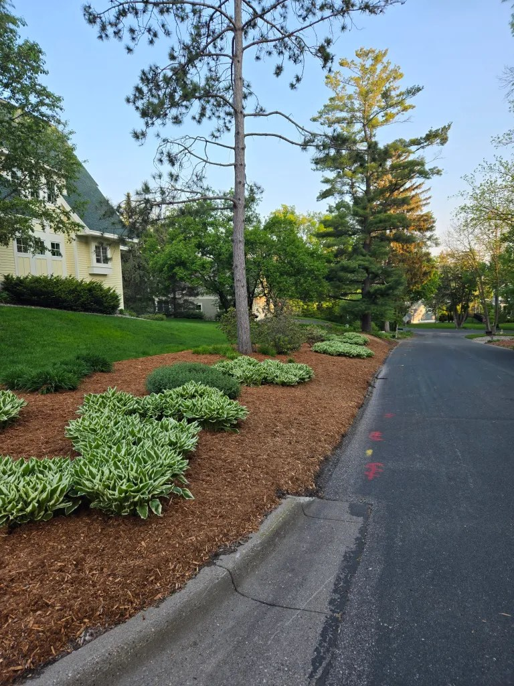
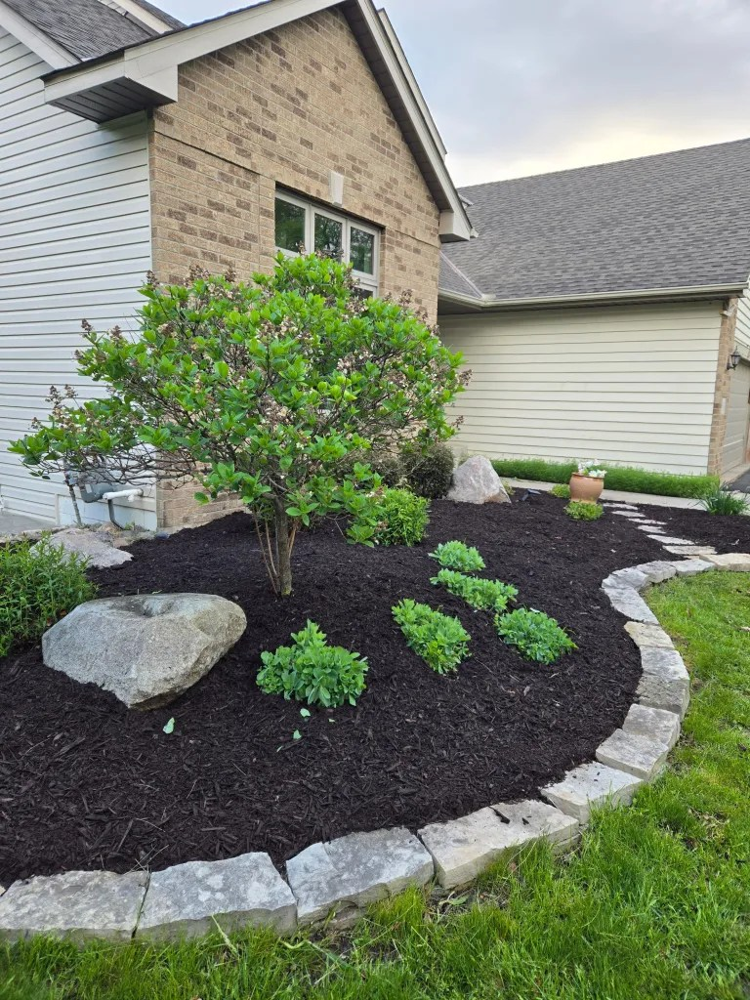
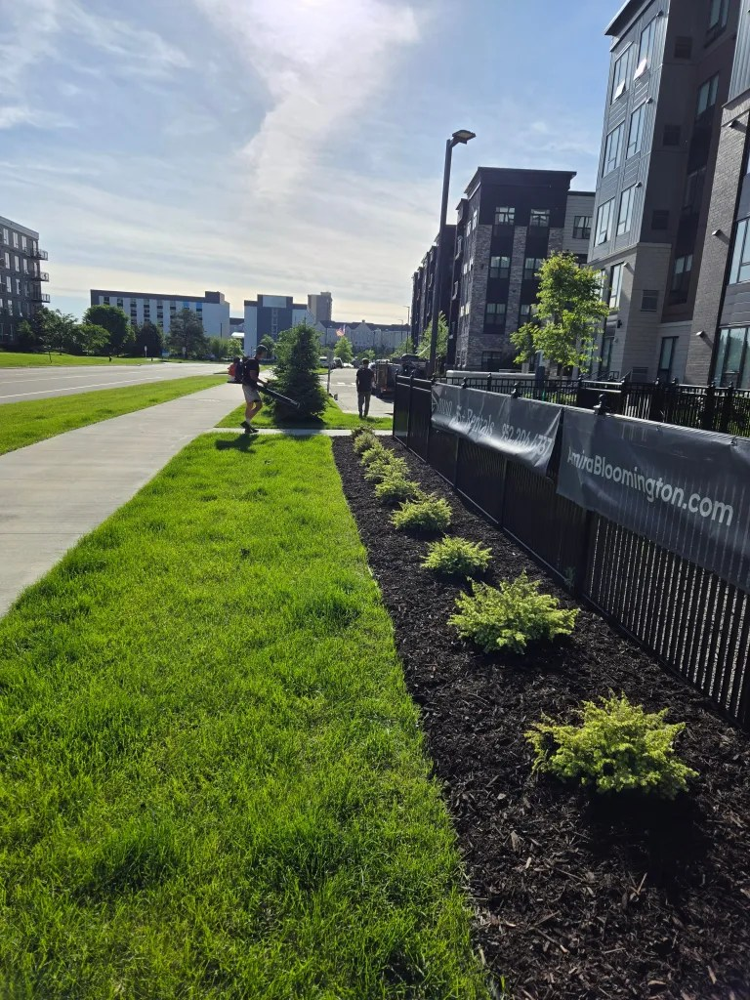
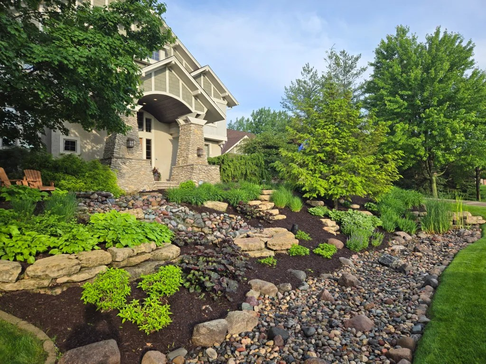
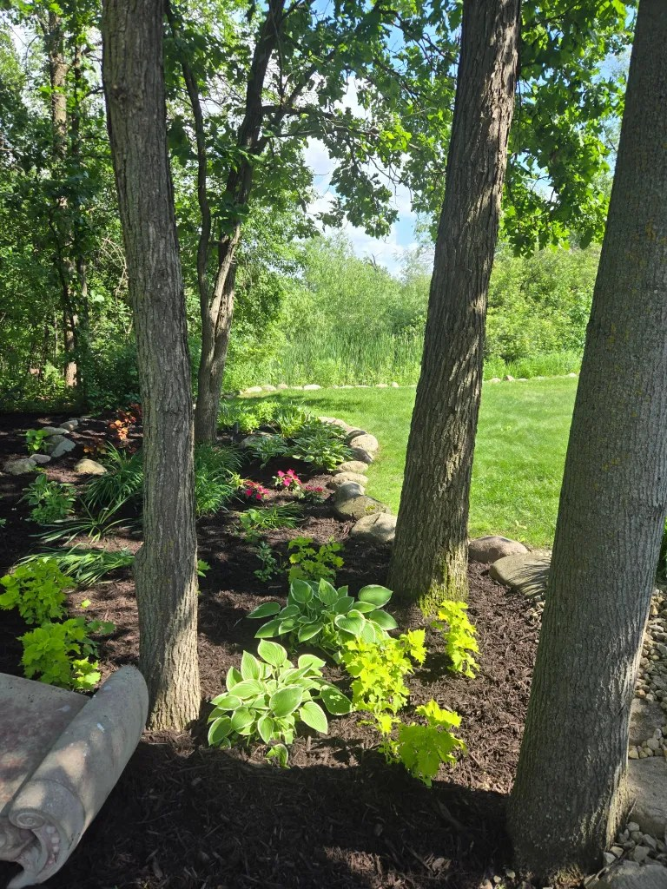
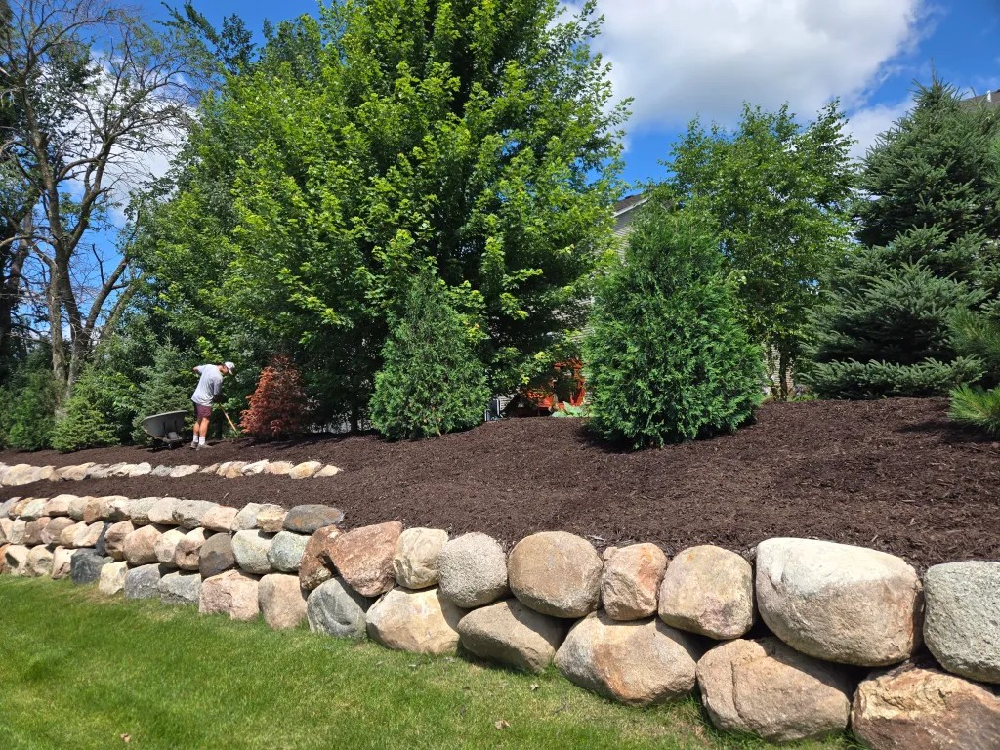
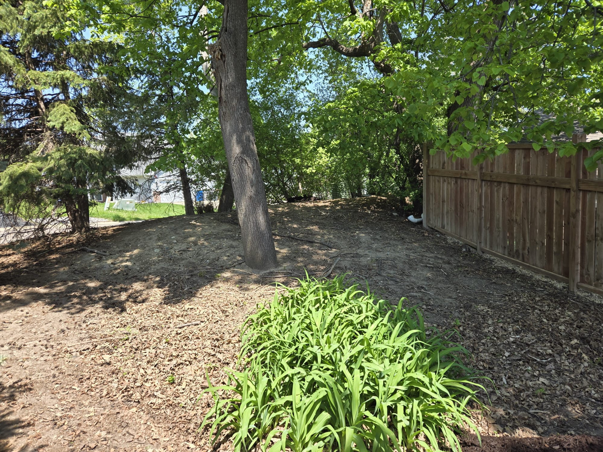
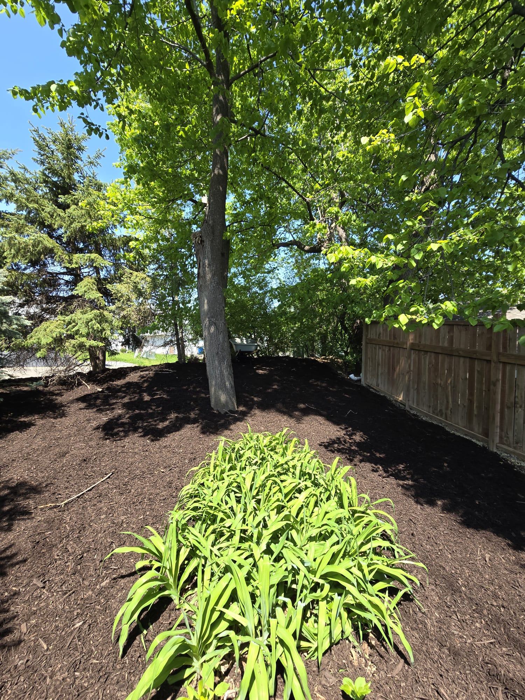

Our Products
Premium mulch, topsoil, gravel, compost, and decorative stone — all available for bulk delivery throughout the greater Columbus area.
Quality Materials for Every Project
All products are sold by the cubic yard and delivered fresh. Call us at (555) 555-1234 to calculate how much you need.
 Best Seller
Best Seller
Natural Hardwood Mulch
Double-ground hardwood mulch — the gold standard for garden beds. Suppresses weeds, retains moisture, and decomposes to enrich soil over time.
1 yd covers ~160 sq ft at 2" depth
PopularBlack Dyed Mulch
Rich jet-black color creates a bold, modern landscape contrast. Our colorfast, non-toxic dye stays vibrant all season and won't fade after rain.
1 yd covers ~160 sq ft at 2" depth
Red Dyed Mulch
Warm, vibrant red tones complement brick homes, terracotta planters, and warm-toned stone. Non-toxic iron oxide dye lasts a full growing season.
1 yd covers ~160 sq ft at 2" depth
Natural Pest RepellentAromatic Cedar Mulch
Natural aromatic cedar that repels insects while adding a warm, golden tone to your beds. Slower to decompose than hardwood — longer-lasting coverage.
1 yd covers ~160 sq ft at 2" depth
Playground Wood Chip Mulch
ASTM-compliant engineered wood fiber mulch designed for playgrounds and recreational areas. Provides excellent fall protection and drainage.
Install at 6-9" depth for safety compliance
Long LastingRubber Mulch (Recycled)
Made from 100% recycled rubber tires. Won't decompose, wash away, or attract insects. Ideal for high-traffic areas and playgrounds.
1 yd covers ~120 sq ft at 2" depth Top Rated
Top Rated
Premium Screened Topsoil
Loamy, screened topsoil with excellent drainage and nutrient retention. Ideal for lawn leveling, new garden installation, and grading projects.
1 yd covers ~100 sq ft at 3" depth
OrganicPremium Garden Compost
Fully matured, rich organic compost that dramatically improves soil structure, drainage, and fertility. Perfect for amending existing soil or creating new beds.
Amend at 2-3" worked into top 8" of soil
Pea Gravel
Smooth, rounded pea-sized gravel in natural gray and tan tones. Popular for pathways, dog runs, drainage areas, and decorative ground cover.
1 yd covers ~100 sq ft at 3" depth
DecorativeRiver Rock
Beautiful natural river stone in mixed gray and tan tones. Excellent for dry creek beds, drainage swales, water features, and low-maintenance areas.
1 yd covers ~80 sq ft at 3" depthOrdering 10+ Yards? You Deserve a Better Price.
Contractors, landscapers, and large residential projects qualify for our bulk pricing tiers. Save up to 20% on large orders and enjoy priority scheduling, dedicated delivery windows, and NET-30 billing for established accounts.
Product FAQ
Everything you need to know about our materials before you order.
Still have questions? Contact our team or call us at (555) 555-1234.